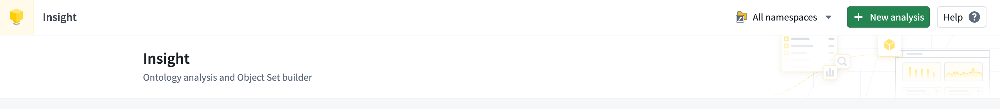
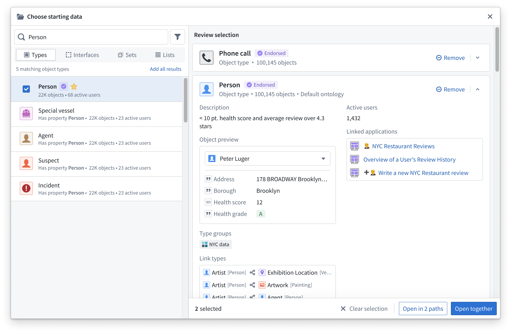
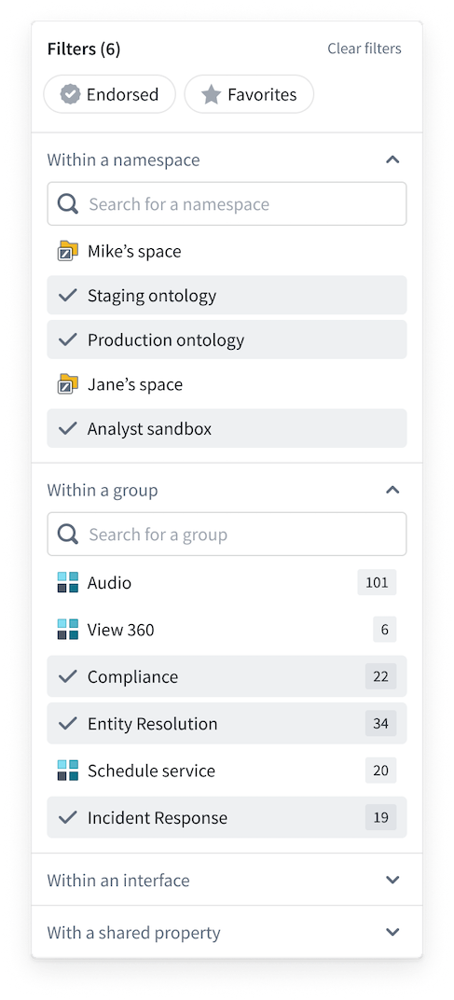
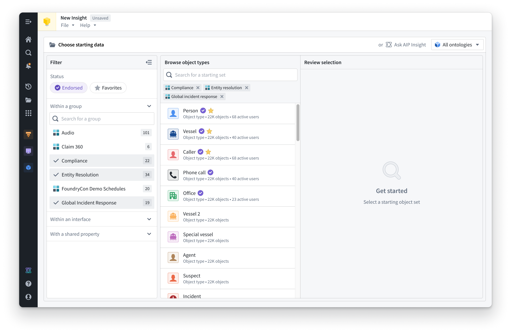
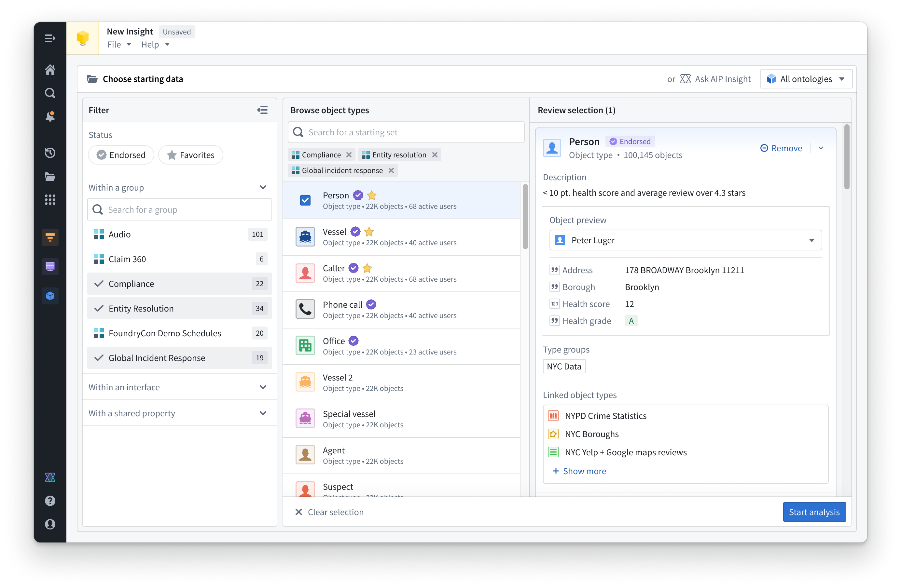

The following tutorial walks you through using Insight to analyze Ontology data, from finding and opening resources to saving and sharing results.
To create a new Insight analysis, select + New analysis from the top right of the home page.

You can also create a new Insight analysis from other applications:
When you create a new Insight analysis, you must first select Ontology data. Insight works with the Foundry Ontology, allowing you to search for object types, object sets, and interfaces. Use the Choose starting data window to find data based on names and descriptions.

For more advanced searching, select the filter icon to the right of the search bar. Available filters include the following:

Filtering allows for more complex searching, using a combination of filters to reduce the search space to find a particular object type.
For example, you can select the Endorsed status filter and choose only certain groups to search within to significantly narrow the scope of results.

Object types can be previewed for more detailed information by selecting a card in the search results. You can select multiple object types to open multiple previews. The preview provides information such as properties, groups, and linked object types. Individual objects can also be previewed.

Choose one or many object types and add them to the analysis. Select Start analysis in the bottom right corner, or select Open on any object type card to begin creating your Insight analysis.
Learn more about building an analysis path for your data.